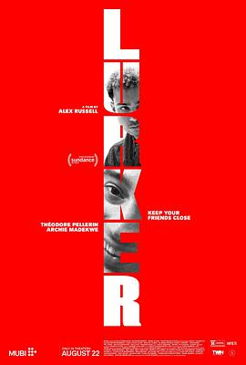

6.6
潜伏者
Lurker
2025
美国
评分 6.6
导演:
亚历克斯·罗素
演员:
西奥多·佩尔兰 / 阿奇·马德基 / 哈瓦娜·罗斯·刘 / 桑尼·苏尔季克 / 扎克·福克斯 / Wale Onayemi / 丹尼尔·佐尔嘉德里
类型:
剧情,惊悚,犯罪
剧情简介
在洛杉矶一家时尚服装店里，马修（西奥多·佩尔兰 饰）冷静而隐秘地观察着一切。他崇拜流行歌手奥利弗（阿奇·马德基 饰），却从不以“粉丝”的身份现身，而在一瞬间将一首奥利弗钟爱的旧歌播放在店铺的音响中，便取得了进入其社交圈的敲门砖。随着马修被邀请成为奥利弗纪录片的导演，他逐渐从幕后走向舞台，社交媒体上的关注度开始飙升。他塑造镜头下的偶像、为他洗衣、拍摄、操纵形象，默默地渴望不再只是一个仰望者，而是不可或缺的存在。店铺里那一刻的慌张、深夜剪辑画面的闪回、镜头里他紧紧抓住奥利弗的目光——都在暗示着马修的位置正在由追随向操控转变。奥利弗的团队里新星纷纷冒起，马修被边缘化，嫉妒、焦虑、隐秘的企图在他脑海中蔓延。他开始质疑：自己是被欣赏的吗？还是取代别人的工具？两人之间的关系在立场交换、镜头逆转中变得诡异。随着纪录片的剪辑推进，镜头外的权力游戏愈发清晰——马修的镜头不仅记录，也在制造。影片以冷静而不张扬的方式描绘出名与被名、追随与主导之间那条模糊的界限。在光鲜舞台背后，他与奥利弗之间的关系既有依赖，又有对立；既像是好友，也像是捕食者。导演通过静默的构图、繁杂的社交媒体波动和无处不在的镜头感，把观众拉入一个人人想被看见、却不知该如何被看的世界。